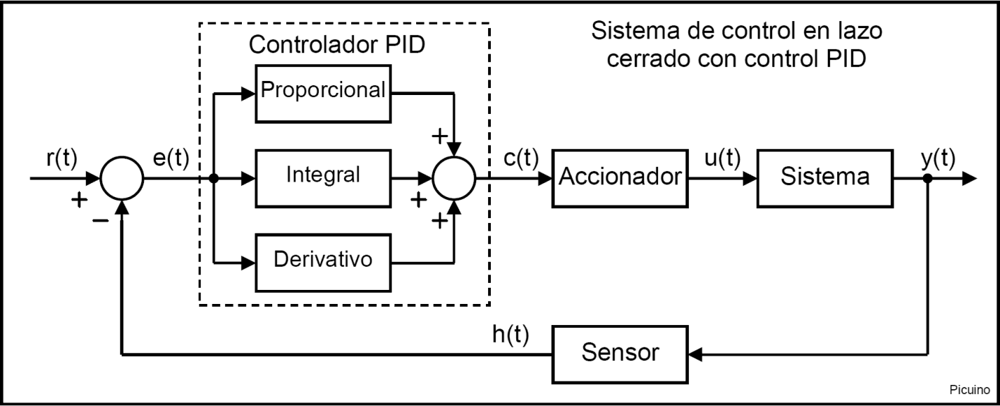
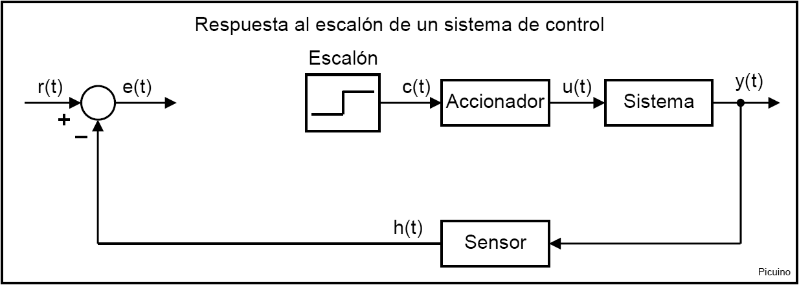
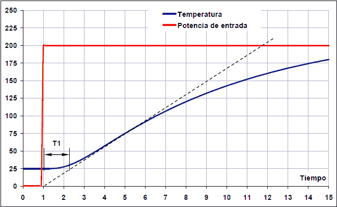
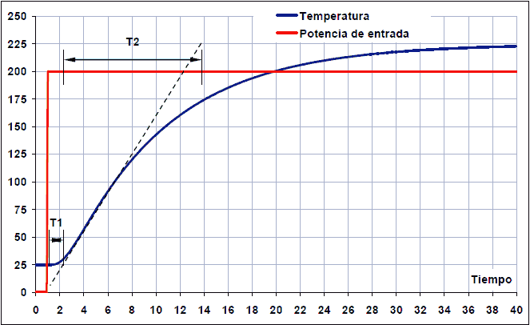
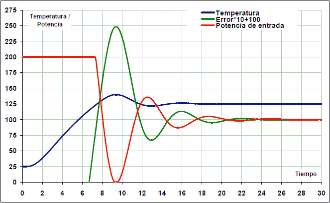
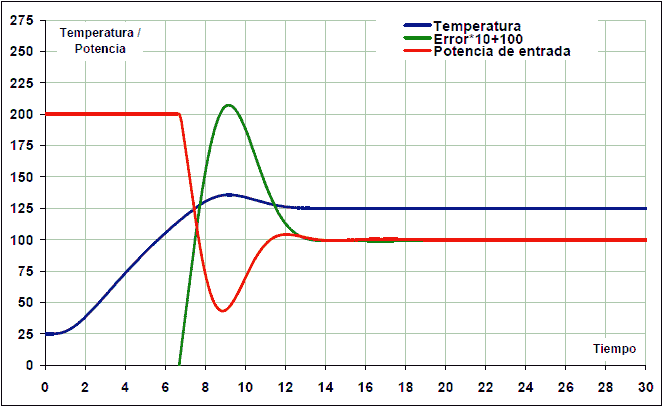
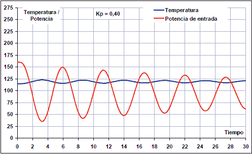
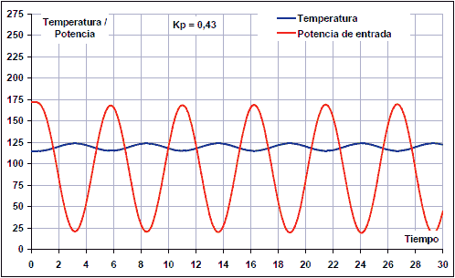
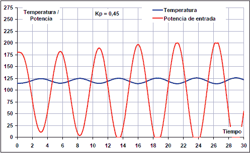
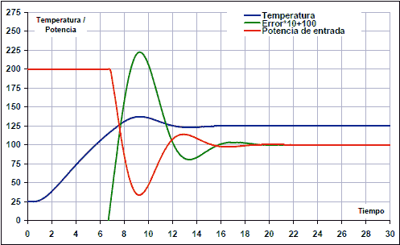

Mètode Ziegler-Nichols¶
El mètode Ziegler-Nichols us permet ajustar o "sintonitzar en " A: ref: controlador PID <rotor> `empíricament, sense conèixer les equacions de la planta ni del sistema controlat. Aquestes regles d’ajustament proposades per Ziegler i Nichols es van publicar el 1942 i des d’aleshores és un dels mètodes d’afinació més generalitzats i utilitzats.
Els valors proposats per aquest mètode intenten obtenir al sistema de retroalimentació una "resposta al pas <https://es.wikipedia.org/wiki/an%C3%A1lisis_de_la_la_phanes_temporal_de_un_system>` __ amb un superpuls màxim de 25%, que és un valor robust amb una bona característica de velocitat i estabilitat per a la major part de la major part del sistema.
El mètode de sintonia dels reguladors PID de Ziegler-Nichols ens permet definir beneficis proporcionals, complets i derivats (KP, KI i KD) de la resposta del sistema de bucle obert o de la resposta del sistema de bucle tancat. Cadascun dels dos assajos s’adapta millor a un tipus de sistema.
Sintonització per a la resposta al pas¶
Aquest mètode d’afinació s’adapta bé als sistemes estables en bucle obert i que tenen un temps de retard del fet que reben el senyal de control fins que comencen a actuar.
Per poder determinar la resposta als passos de la planta o sistema controlat, el controlador PID ha de ser eliminat i substituir -lo per un senyal de pas aplicat a l’actuador.
{kind=link}

La figura següent mostra la modificació que es realitzarà al sistema de control del bucle tancat per convertir -lo en un sistema de bucle obert que respon a un senyal de pas, eliminant el controlador PID:
{kind=link}

A la imatge següent, l’entrada de pas a l’actuador o al senyal ** c (t) ** està representada en vermell. En blau es representa la sortida del sistema mesurada pel sensor o el senyal ** h (t) **. El pas d’entrada ** C (t) ** ha d’estar entre el 10% i el 20% del valor d’entrada nominal. Com es pot veure, la resposta del sistema presenta un retard, també anomenat temps mort, representat per T1.
{kind=link}

Per calcular els paràmetres, comença dibuixant una línia recta tangent al senyal de sortida del sistema (corba blava). Aquesta tangent es dibuixa a la imatge amb una línia recta.
El temps ** t1 ** correspon a ** temps mort **. Aquest és el temps que es necessita perquè el sistema comenci a respondre. Aquest interval es mesura ja que el senyal de pas puja, fins al punt de tall de la línia tangent amb el valor inicial del sistema, que en aquest cas és el valor de 25 ºC
El ** Time T2 ** és el temps de pujada ** **. El temps 2 s’iniciarà on la línia tangent es redueix al valor de sortida inicial (25º a 2 segons) i acabarà on la línia tangent es redueix al valor de sortida final (225º a 14 segons).
{kind=link}

Resposta de pas. El temps 2 comença després de la T1 i s’acaba quan s’arriba al valor màxim de sortida, en aquest cas 225ºC.¶
A més d’aquests dos temps característics, també s’ha de calcular la variació del senyal de pas DX i la variació de la resposta del sistema DY.
La variació ** dx ** correspon als passos del senyal de control. A l'exemple que apareix a les imatges, la variació dels passos correspon a dx = 5 volts del senyal de control c (t).
La ** variació dy ** del sistema a causa del senyal de pas que hem introduït, correspon a l'exemple a dy = 200 ºC mesurat pel sensor H (t) en una certa quantitat de volts.
A partir d’aquests valors podeu calcular la constant del sistema KO:
Ko = (dx * t2) / (dy * t1)
I des de la constant KO, els paràmetres del controlador PID amb només proporció (P), proporcional i integral (PI), proporcional i derivada (PD) o acció completa i derivada (PID) (PID):
Control Kp Ki Kd P Ko Pi 0,9*KO 0,27*KO/T1 P.S. 1.6*ko 0,60*ko*t1 PID 1.2*ko 0,60*KO/T1 0,60*ko*t1
La constant de KP correspon al guany proporcional, Ki és el guany integral i KD és el guany derivat.
Exemple d’ajustament PID amb la resposta al pas¶
A l'exemple que apareix a les imatges anteriors, s'ha utilitzat la simulació d'un forn elaborat amb un full de càlcul. També està disponible un simulador d’un sistema de calefacció amb dues calderes.
Simulador de control de la temperatura :: Descarregar: `Control temal. Versió 0.11 <Control/_Downloads/Themal-Control-011.zip> `
Per calcular els paràmetres del sistema, una resposta al pas configureu el senyal de control per 0 volts amb un pas de 5 volts. El sistema respon canviant de 25 graus centígrads (0,25V) a 225 graus centígrads (2.25V). Els temps són els que apareixen als gràfics anteriors, que amb els quals els valors de la corba de resposta del sistema són els següents:
Dx = 5 - 0 = 5 volts
Dy = 2,25 - 0,25 = 2 volts
T1 = 2,2 - 1 = 1,2 segons
T2 = 13,8 - 2,2 = 11,6 segons
A partir d’aquests valors podeu calcular els paràmetres del regulador PID:
Ko = (dx * t2) / (dy * t1) = (5 * 11.6) / (2 * 1.2) = 24,2
Control Kp Ki Kd P 24.2 Pi 21,8 5.44 Pi 38,7 17.4 PID 29,0 12.1 17.4
Després d’introduir els valors KP, KI i KD al PID, s’obté la resposta següent:
{kind=link}

Ara els paràmetres PID es poden ajustar per obtenir una resposta lleugerament més estable. El guany derivat i reduït ha augmentat la integral per reduir les oscil·lacions:
KP = 28
Ki = 10
KD = 21
Com a resultat, el sistema ara s’estabilitza en 12 segons:
{kind=link}

En tots els casos, la resposta integral ha estat limitada de manera que val la pena zero si l’error és superior a 40 ºC. Aquest mode de guany integral s’anomena anti-Windup i serveix per evitar un excessiu excessiu en la resposta. Aquest Overpico es produeix perquè el control integral augmenta mentre l’actuador està saturat, de manera que s’acumula massa alt i no s’ajusta al sistema real del sistema.
Sintonització per al guany crític en bucle tancat¶
Aquest mètode no requereix eliminar el controlador PID del bucle tancat. En aquest cas, només cal minimitzar l’acció derivada i l’acció integral del regulador PID. L’assaig de bucle tancat és augmentar gradualment el guany proporcional fins que el sistema oscil·la d’una manera mantingut abans de qualsevol pertorbació. Aquesta oscil·lació ha de ser lineal, sense saturacions. En aquest moment, heu de mesurar el guany proporcional, anomenats guanys crítics o KC, i el període d’oscil·lació del TC en segons.

Un cop mesurats aquests dos valors, podeu calcular els paràmetres del controlador PID amb només una acció proporcional (P), proporcional i integral (PI), proporcional i derivada (PD) o proporcional i derivada (PID) (PID):
Control Kp Ki Kd P 0,50*kc Pi 0,45*kc 0,54*KC/TC P.S. 0,80*kc 0,075*kc*tc PID 0,59*kc 1.18*KC/TC 0,075*kc*tc
La constant de KP correspon al guany proporcional, Ki és el guany integral i KD és el guany derivat.
Exemple de sintonització de PID amb guany crític¶
Realitzarem una sintonia del sistema tèrmic simulat anteriorment:
Simulador de control de la temperatura :: Descarregar: `Control temal. Versió 0.11 <Control/_Downloads/Themal-Control-011.zip> `
La primera operació serà cancel·lar els guanys derivats i integrals:
Kd = 0
Ki = 0
A continuació, s’estableix una temperatura de treball en la referència i s’incrementa el guany proporcional fins que s’aconsegueixi una resposta oscil·ladora mantinguda.
Amb un guany proporcional kp = 0,40, la resposta continua amortint:
{kind=link}

En augmentar el guany proporcional a KP = 0,43, s’obté una resposta amb oscil·lacions mantingudes:
{kind=link}

En augmentar el guany a KP = 0,45, les oscil·lacions creixen amb el pas del temps, de manera que el guany seria massa alt.
{kind=link}

En aquest cas, per tant, el guany crític i el període són:
KC = 0,43
Tc = 21/4 = 5,3 s
A partir d’aquests valors es calculen els paràmetres del controlador PID:
Control Kp Ki Kd P 0,215 Pi 0.195 0,044 Pi 0,344 0.169 PID 0,254 0,096 0.169
Com es pot veure, els valors són similars als valors obtinguts anteriorment amb el mètode de resposta al pas. Les diferències es deuen al fet que aquest sistema no és lineal i, per tant, té una resposta oscil·ladora distorsionada quan es busca el guany crític.
Introduint els valors anteriors al controlador PID, s’obté la resposta següent del sistema tèrmic amb el controlador PID:
{kind=link}

En aquest cas, també podeu acabar de perfeccionar el regulador PID per obtenir una resposta lleugerament més estable.
Referències¶
[1] Ogata, Katsuhiko. Enginyeria de control moderna. Tercera edició. Saló de Prentice Editorial.
[2] Ogata, Katsuhiko. Sistemes de control de temps discrets. Segona edició. Saló de Prentice Editorial.